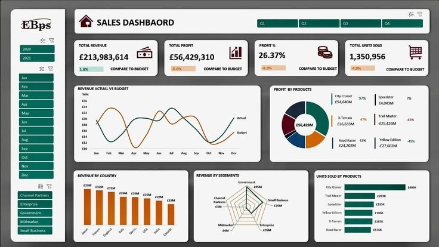
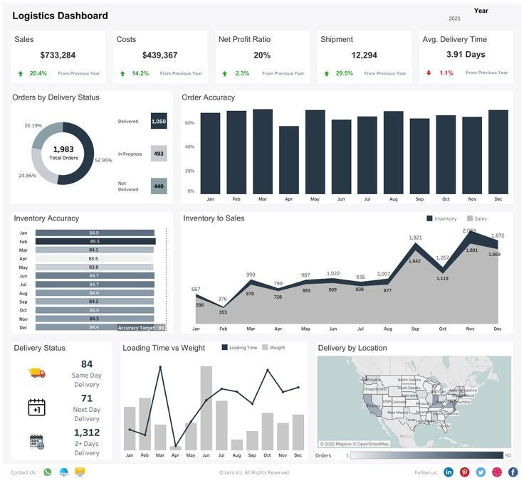

DATA ANALYTICS & VISUALISATION
Data Analytics and
Visualisation
Turning Data into Actionable Insights
Introduction to Core Concepts
What is Data Analytics?
Data Analytics is the systematic computational analysis of data. By applying statistical algorithms and quantitative processes, we translate raw datasets into qualitative summaries and actionable trends.
- Identifies patterns, correlations, and anomalies
- Informs predictive and prescriptive modeling
- Backs assumptions with empirical evidence
What is Data Visualisation?
Data Visualisation is the graphic representation of information. By using visual elements like charts, graphs, maps, and sparklines, we provide an accessible way to see and understand trends, outliers, and patterns.
- Translates complex queries into visual syntax
- Engages the brain's visual processing power
- Simplifies presentation of dense multivariate metrics
Importance in Strategic Decision Making
Combining analytics and visual presentation removes cognitive bias and intuition-driven guess work. Modern dashboards serve as the single source of truth, enabling executives to identify bottlenecks, forecast revenue streams, and reallocate capital dynamically.
The BI Technology Stack
Excel
Data cleaning + basic analysis
The foundation of data processing. Enables rapid ad-hoc calculations, data cleaning via Power Query, and pivot table summarization to structure raw source datasets.
Power BI
Interactive dashboards
Industry-standard business intelligence platform. Connects disparate data sources to build rich, automated relational models and interactive dashboard reports with DAX analytics.
Tableau
Advanced visual storytelling
The premier canvas for aesthetic data representation. Delivers custom high-fidelity visualizations, geospatial heat mapping, and guided analytical storyboards for executive reviews.
The Analytics Pipeline
Data Collection
Ingesting raw data from databases, API feeds, flat CSV files, and web scraping scripts.
Data Cleaning
Removing duplicate rows, correcting NULL values, standardising date formats, and filtering outliers.
Data Analysis
Executing cohort groupings, descriptive calculations, correlation studies, and statistical models.
Data Visualisation
Translating numbers into interactive visual reports, line-trends, maps, and bar graphics.
Actionable Insights
Drawing executive decisions, highlighting business bottlenecks, and optimizing resource workflows.
Excel Data Pre-processing & Charts
Cleaning Techniques
Preparing raw sheets for loading
Data cleaning consumes up to 70% of an analyst's timeline. Excel offers rapid tooling to handle anomalies:
- Duplicate Purges: Standardizing records to single instances.
- Handling Null Values: Filling blanks with zeros or conditional averages.
- Text to Columns: Parsing comma or space-delimited text.
- Data Type Audit: Ensuring dates and currencies compute correctly.
Bar Chart
Comparing categories
Pie Chart
Share of total
Line Chart
Trends over time
Interactive Power BI Engine Mockup
Quarterly Performance Matrix
All Regions SelectedTableau Visual Storytelling
Advanced Visuals
Beyond simple bar/pie metrics
Tableau excels in rendering complex layout queries:
- Dual-axis composite charts
- Geo-spatial maps with heat layouts
- Density scatter matrices with cluster nodes
Trend Analysis
Spotting seasonal variance
Calculates moving averages and predictive forecasting:
- Historical baseline regressions
- Standard deviation anomaly triggers
- Multi-variable predictive confidence bands
Storytelling Dashboards
Driving context, not just metrics
Links dashboards sequentially to form stories:
- Problem discovery -> validation -> solution
- Dynamic tooltips detailing context
- Guided analytical walkthroughs
Sample Story Board: Five-Year Growth Prediction
Executive Dashboard Creation & Insights


Actionable Insights
Click below to analyze and reveal executive findings
Sales Performance Insights
Product Profit Polarization
City Cruiser is the primary profit driver yielding £54.64M (97% of budget target), while Yellow Edition (-£27.66M) and Trail Master (-£25.43M) are severe drags, running at ~45% below their budgets.
Profit Margin Target Shortfall
While total revenue slightly exceeded budget targets by 1.8% (£213.98M), operational costs and product losses dragged total profit down by -6.6% (£56.43M) and profit margin down by -8.3% (26.37%).
Logistics Operations Insights
Shipments & Net Profit Growth
Total shipments grew significantly by +29.5% YoY (12,294 units) and overall Sales rose +20.4% ($733K), leading to an improved Net Profit Ratio of 20% (+2.3% improvement YoY).
Operational Accuracies & Speed
Average delivery time stands at 3.91 days (mostly 2+ days delivery) and inventory accuracy target of 93% was missed (averaging ~84%), indicating bottlenecks in warehouse dispatching.
Analyst Key Learnings
1. Clean Data is Paramount
Garbage in, garbage out. No level of visual engineering or advanced calculation can fix outputs grounded on corrupted, misaligned, or poorly cleaned data structures.
- Pre-processing is the most vital step
- Rigorous schema audits save downstream work
2. Visual Context Rules
Avoid chart clutter. Selecting the appropriate visual type ensures rapid parsing of information. A complex visual that requires a manual is a design failure.
- Bar charts for category comparison
- Line charts for tracking timelines
- Pie slices only for simple segment breakdowns
3. Tool Integration Power
Use the full stack. Connect Excel's formula engine, Power BI's relational database modeling, and Tableau's storytelling canvases for maximum corporate leverage.
- Build reproducible template workbooks
- Automate updates using database API linkages
Conclusion & Summary takeaways
Data Analytics Supports Growth
By implementing quantitative systems, organisations shift from operating on retro-active indicators to modeling proactive indicators. Business analytics provides concrete proof to guide strategic product roadmaps and minimize resource overheads.
Visualisation Demystifies Complexity
Even the most thorough algorithms fail if decision-makers cannot interpret the data. Visual panels bridge the gap between technical analysts and executive teams, transforming obscure cells into visual assets that anyone can read.
Thank You for Your Time
Questions and feedback are welcome. Let's build something data-driven together.